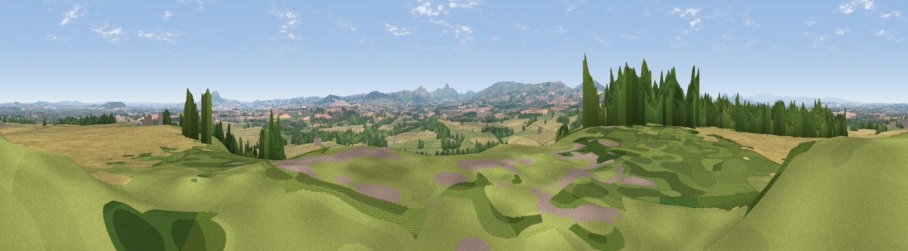

Lyth Hill
#7587 in England · top 26% of its area beats it · near AnnscroftWhere it is
The exact computed spot (SJ 47175 06875). Click the marker for map links.
The view, rendered

A 360° render of this exact spot computed from the terrain model, tree cover and land cover — summer colours, afternoon light, calibrated against photographs of famous viewpoints. Real trees, hedges and buildings will differ in detail.
The panorama
Grey silhouette: terrain skyline in each direction (720 bearings, Earth curvature and refraction included). Dashed green: skyline with trees (+15 m) and buildings (+8 m) as obstacles. Blue strip: how far the ground is visible on each bearing.
Where the view opens
Wedge length = distance to the farthest visible ground on that bearing (vegetation-aware). Rings at 10, 25 and 50 km.
What fills the view
57% cropland · 26% grassland · 15% woodland · 2% built-up
Angular shares of the visible panorama (visual magnitude), not map area. Landscape diversity 0.45 (0–1 Shannon).
Key numbers
More beautiful places nearby
The staircase of upgrades: each row has a higher view potential than everything closer. Driving times are estimates from straight-line distance, calibrated against real road routing — check an actual route before setting out.
| Place | Direction | Drive | Score |
|---|---|---|---|
| Broompatch | W · 4 km | ~10 min | 71.3 |
| Radlith | WSW · 5 km | ~12 min | 73.3 |
| Viewpoint near Plealey | WSW · 6 km | ~12 min | 78.0 |
| Earl's Hill | WSW · 7 km | ~14 min | 82.2 |
| The Lawley | SSE · 10 km | ~19 min | 85.8 |
| Viewpoint near Little Wenlock | E · 15 km | ~27 min | 86.6 |
| North Hill | SSE · 67 km | ~90 min | 86.8 |
| Worcestershire Beacon | SSE · 68 km | ~92 min | 87.1 |
52.65701, -2.78238 · source: dobih hill · position refined by local search. Computed location — check access rights before visiting.